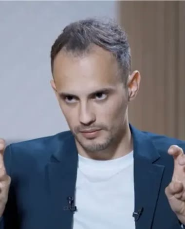
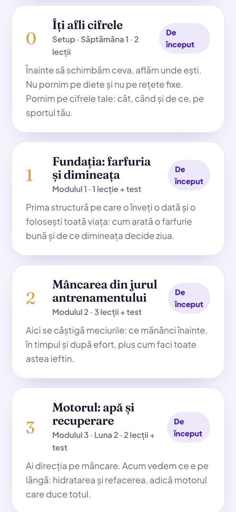
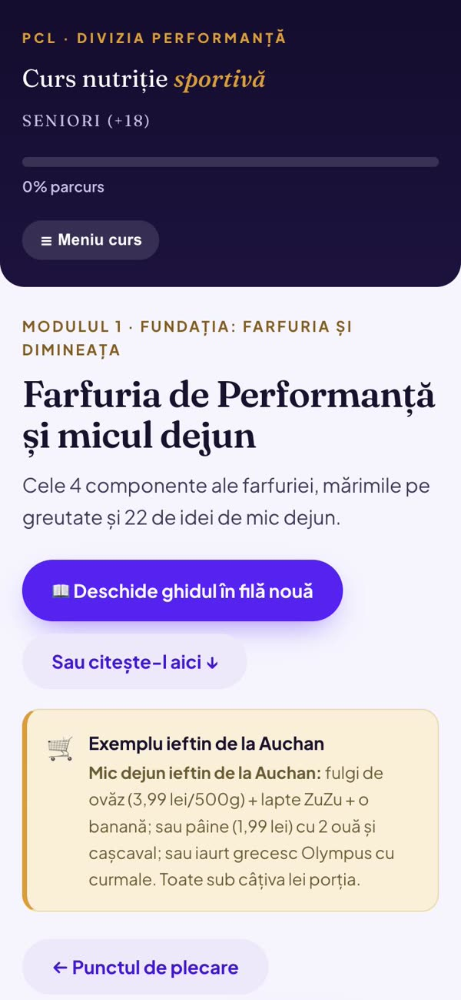
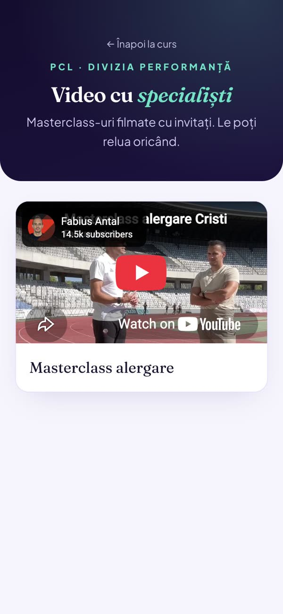
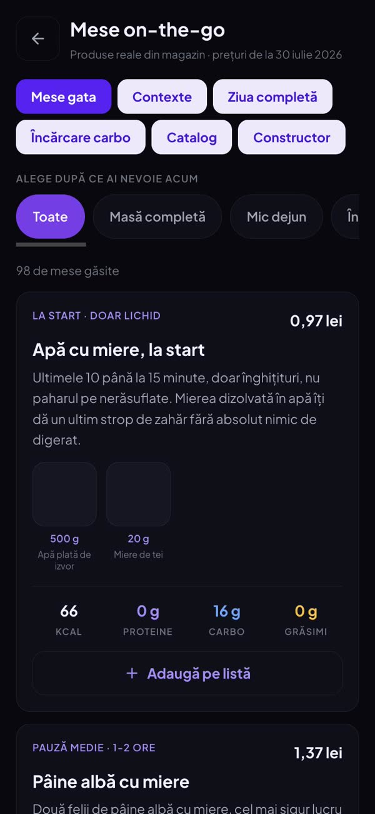

8 săptămâni de nutriție pentru fotbaliști +18
Fără diete. Fără cântar de bucătărie. Înveți să îți faci singur farfuria, ca să reziști tot antrenamentul și să te refaci până la următorul, chiar dacă ai și serviciu.
Ultima grupă din acest an pornește pe 15 octombrie.
Cine ține programul

De peste 5 ani lucrez la alimentația și refacerea sportivilor de performanță: fotbaliști de la națională, din Liga 1 și din campionatele mari ale Europei, plus atleți de nivel olimpic.
Plus trei internaționali care joacă în Europa, sub confidențialitate, și alți sportivi care preferă să nu fie numiți.
Vrei să înveți cum au făcut Chiricheș, Chipciu sau Screciu?
Ăsta e sistemul.
Același sistem pe care l-am folosit cu ei, așezat pe programul tău: antrenamente, meciuri și, de cele mai multe ori, un serviciu.
01 Ce este, pe scurt
Un curs de nutriție pentru fotbaliști de peste 18 ani. Ține două luni și se face online.
Ai 4 întâlniri live, 2 masterclass cu invitați, academia online cu 7 ghiduri scrise și aplicația de sportivi, în care fotografiezi ce mănânci.
02 De ce am făcut programul
Cealaltă jumătate se întâmplă la masă și în somn. Acolo se construiește progresul, nu în sală.
E un sfat pe care nimeni nu îl poate aplica. Nimeni nu îți spune cât, când și ce anume.
Lucrul individual cu mine înseamnă câteva sute de euro pe lună. Mulți își doresc asta și nu și-o permit, și e cât se poate de normal. De asta am construit programul ăsta: același sistem și aceleași instrumente, doar că în grupă. Pentru două luni, primești mai mult decât ai primi într-o singură lună de lucru individual.
03 Cele 8 săptămâni
Fiecare modul ține două săptămâni și se adaugă peste ce ai învățat înainte. Nu o iei de la capăt.
Săptămâna 0
Primești acces în aplicația dedicată sportivilor, aceeași pe care o folosesc nume mari din fotbalul românesc. Plus ghidul de pornire, calculatorul pe kilogram de corp și măsurătorile de start. De aici plecăm, ca să vedem la final ce s-a schimbat.
Modulul 1 · săptămânile 1 și 2
Cum arată o farfurie completă, fără cântar. Și de ce prima masă a zilei decide cum arată antrenamentul de seara.
Modulul 2 · săptămânile 3 și 4
Ce mănânci înainte, ce bei în timpul efortului, ce pui în corp în prima oră după. Partea care se vede cel mai repede.
Cu un antrenor de atletism care lucrează la nivel olimpic. Cum se aleargă fără să se rupă genunchii.
Modulul 3 · săptămânile 5 și 6
Cât bei într-o zi cu două antrenamente, de ce contează somnul și cum te ridici după un meci greu.
Cu un kinetoterapeut. Ce faci zilnic 10 minute, ca să nu ajungi la accidentare.
Modulul 4 · săptămânile 7 și 8
Serviciul și drumul. Ce pui în pachet, ce alegi la prânz între ture, ce mănânci în deplasare. Aici treci de la „mi-a zis cineva” la „știu eu”.
Final
Măsurătorile de final, diploma Sportiv Calibrat și intrarea în Registrul Sportivilor.
04 Cum arată academia online
Parcurgi cursul în academia online, de pe telefon, capitol după capitol, în ritmul tău. Fiecare capitol are lecțiile lui și un test scurt. Ghidurile se deschid oricând, iar masterclass-urile cu invitați sunt filmate și rămân de revăzut.



Glisează spre stânga pentru celelalte ecrane →
05 Trei lucruri care rămân ale tale
Cursul se termină. Instrumentele nu.
Îți spune de câtă mâncare are nevoie corpul tău, la greutatea ta și la sportul tău. Dacă se schimbă greutatea sau volumul de antrenament, îl recalculezi în 30 de secunde.
Rămâne pe viață82 de produse reale din magazin, cu preț și valorile de pe etichetă. Nu rețete generice, ci exact ce găsești pe raft.

Îl deschizi pe telefon în magazin și știi exact ce iei și cât costă. Fără abonament, fără cont, rămâne al tău.
Rămâne pe viațăScrise simplu, de citit în 10 minute fiecare. Le descarci și îți rămân pe telefon, inclusiv peste doi ani.
Rămâne pe viață06 Ce știi să faci la final
07 După absolvire
Când termini cele 8 săptămâni, intri în Registrul Sportivilor. Instrumentele rămân deschise, iar progresul tău rămâne urmărit și după ce se încheie grupa.
Nu e o listă de nume. E felul în care ținem legătura cu sportivii care au trecut pe aici.
Un sportiv educat nu ar trebui să fie un lux.
08 Cât costă și ce primești
200€
Pentru toate cele 8 săptămâni. Adică 100 de euro pe lună. Nu se adaugă nimic pe parcurs.
Grupa pornește doar dacă se strâng cel puțin 10 înscrieri. Dacă nu se strâng, îți spun din timp și amânăm.
09 Întrebări frecvente
Da. Grupa asta e dedicată fotbaliștilor de peste 18 ani, de orice nivel. Cifrele se calculează pe greutatea ta și pe cât te antrenezi.
Nu. Trebuie să te antrenezi constant și să vrei să înțelegi ce faci. E la fel de util dacă joci fotbal de două ori pe săptămână și vrei să nu mai obosești în repriza a doua.
Nu. E despre performanță și despre cum îți susții antrenamentul. Compoziția corporală se schimbă de obicei ca efect secundar, dar nu ăsta e scopul și nu asta vindem.
Da, și e cazul cel mai frecvent. Un modul întreg e despre ce mănânci când antrenamentul e la 20:30, cum arată cina după el și cum pornești a doua zi fără să fii gol.
Un seminar live de aproximativ o oră, plus câteva minute pe zi în aplicație. Nu te scoate de la antrenamente și nu îți mănâncă din timpul de serviciu.
Nu. Programul e construit pe mâncare din magazinele de aici, iar unul dintre instrumente îți arată exact cât costă fiecare masă. Dacă apare discuția despre suplimente, e ca informație, nu ca vânzare. Eu nu vând suplimente.
Toate seminariile se înregistrează. Le vezi când ai timp, iar întrebările le pui pe grup.
Calculatorul, sistemul de mese și ghidurile rămân ale tale. Intri în Registrul Sportivilor și poți reveni oricând la materiale.